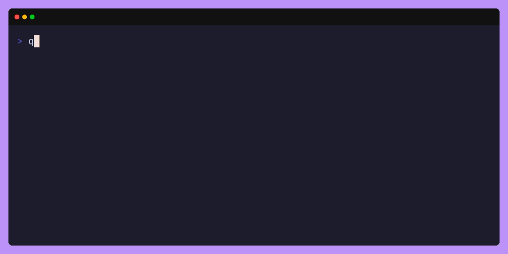
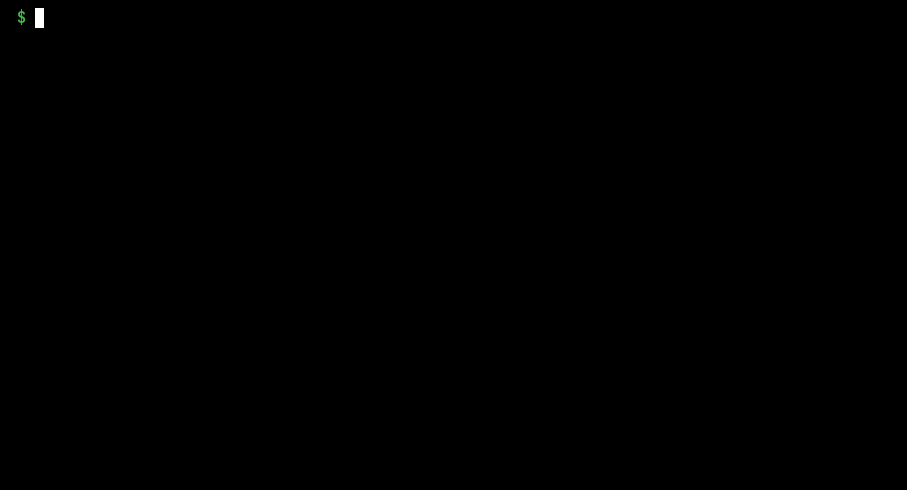
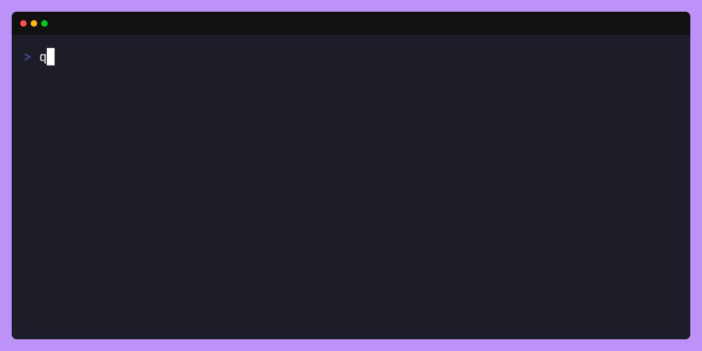

qemantra#
qemantra is a tool to manage QEMU/KVM virtual machines.
Features#
- Use QEMU without a graphical interface.
- Single static binary, no dependencies.
- No fuss, run VM's with a single command.
Who is it for ?#
qemantra is a opionated tool.
qemantra is
- A simple tool for simple uses. It is for the casual virtualizer.
- Will probably never support highly complex features.
qemantra is not
- A complex VM management tool.
- A performant or efficient tool.
- A production/enterprise tool.
Dependencies#
qemu-system-*binaries.
Mostly packaged with qemu-full (Arch/Debian).
ovmf(Optional): for UEFI. See here.
Debian#
sudo apt install qemu-system-x86 qemu-system-sparc qemu-system-ppc qemu-system-arm
sudo apt install qemu-full
Arch#
sudo pacman -S qemu-system-x86 qemu-system-arm
sudo pacman -S qemu-full
Installation#
- You can download a binary from the releases section on GitHub.
If you have the Go compiler installed, you can install using this command.
go install github.com/pspiagicw/qemantra@latest
If you use gox, you can also run.
If can also clone the repo and compile it manually.
git clone https://github.com/pspiagicw/qemantra
cd qemantra
go build .
# Or
groom build
Config#
- You will need a config to get started.
- You can create a config at
/home/<username>/.config/qemantra/config.toml - It should have the following content, change it accordingly
imageDir = "~/.local/share/qemantra/images"
machineDir = "~/.local/share/qemantra/machines"
Usage#
create#
- You can create virtual machines using the
qemantra createcommand.
qemantra create
- This will start a interactive prompt to ask details about the VM.
You will need to enter
- A valid name
- A valid CPU core Count
- A valid RAM size
Attaching a disk is optional.
If a disk is requested, you will need to provide
- A disk name
- A disk format
- A disk size
run#
- You can run machines using
qemantra run - Running the virtual machine uses QEMU to run the machine using the given details.
qemantra run [FLAGS]

Flags#
--boot#
This allows to select a different boot option.
The different boot options available are
isoThis boots the ISO.menuThis enables the menu, interactively choose the disk to boot.
--external#
Provide a external disk to attach. This would be attached in addition to the existing disk (if present).
--kvm#
Enable or disable KVM. By default kvm is enabled. To disable use -kvm false.
Features such as SMP depend on KVM.**
--iso#
Provide ISO disk to attach.
--uefi#
Provide a OVMF file to use as UEFI bios.
list#
You can list machines using qemantra list.
qemantra list

rename#
You can use the qemantra rename command to rename any previously created machine.
qemantra rename

edit#
- You can use the
qemantra editcommand to edit any previously created machine. - It would show prompts to change the details of any given VM.
- Shows current settings in brackets.
Edit is different from
rename. For changing the name, see rename.
qemantra [GLOBAL] edit [OPTIONS]

UEFI#
- UEFI support is not natively bundled with QEMU, you need to install a external package using your package manager.
- You will need to install
ovmfpackage. - When running a virtual machine, point to the appropriate (.fd) file.
- In most systems, this would be installed in
/usr/share/ovmf/OVMF.fd

Similar Projects#
- libvirt (GUI and CLI)
- VBoxManage (CLI for VirtualBox).
- Quickemu (CLI, written in Bash)
Contribution#
⭐ Star the project on GitHub if you like it!
Anyone is free to Contribute to the project, either by raising a issue or opening a PR.
Changelog#
Format is based on Keep a Changelog, Adheres to Semantic Versioning.
Unreleased(v0.2.3)#
Changed#
- Moved from 'promptui' to 'survey/v2' for prompting the user.
Removed#
- Removed mdboook website, moved to single README.md file.
- Removed unit tests.
- Removed autoinstall script.
Added#
- Added
deletesubcommand. - Help printers for each subcommand.
- Added support for config files.
v0.2.2#
Added#
- Auto documentation generation with
mdbook.
Changed#
- Moved from
maketogroom
v0.2.0#
Added#
- Added website with gifs and logo.
- Added autoinstall script
Removed#
- Dependency on flaggy
v0.0.1#
Added#
- Supports
run,create-img,create-machine,list,check,rename,editsubcommands. - "Added a changelog.md"